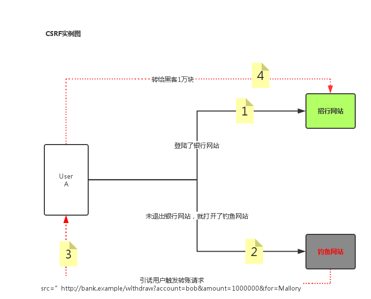

Django – 模板
在Django框架中，模板是可以帮助开发者快速生成呈现给用户页面的工具。模板的设计方式实现了MVT中V T的解耦，V T有着N：M的关系，一个V可以调用任意T，一个T可以供任意V使用 模板处理分为两个过程：加载、渲染。
加载静态配置文件
1
2
3
4
5
6
7
8
9
| 在settings.py中最底下有一个叫做static的文件夹，主要用来加载一些模板中用到的资源，提供给全局使用
这个静态文件主要用来配置css，html，图片，文字文件等
STATIC_URL = '/static/'
STATICFILES_DIRS = [
os.path.join(BASE_DIR, 'static')
]
只后在模板中，首先加载静态文件，之后调用静态，就不用写绝对全路径了
|
使用静态配置文件
a) 加载渲染静态配置文件 模板中声明
1
| {% load static %} 或者 {% load staticfiles %}
|
在引用资源的时候使用
1
| {% static 'xxx' %} xxx就是相当于staticfiles_dirs的一个位置
|
b) 直接定义静态配
1
| <img src="/static/images/mvc.png">
|
其中: 展示static文件夹下有一个images文件夹，下面有一个mvc.png的图片
模板摘要
模板主要有两个部分
1
2
| HTML静态代码
动态插入的代码段（挖坑，填坑）也就是block
|
动态填充
模板中的动态代码断除了做基本的静态填充，还可以实现一些基本的运算，转换和逻辑 如下:
django_temp_if
模板中的变量： 视图传递给模板的数据 标准标识符规则 语法：
如果变量不存在，则插入空字符串
模板重的点语法
1
2
| 对象.属性或者方法
索引 （student.0.name）
|
django_temp_dian
模板中的小弊端
模板的标签
1
2
3
4
| 语法 {% tag %}
作用 a）加载外部传入的变量
b）在输出中创建文本
c）控制循环或逻辑
|
if表达式
格式1：
1
2
3
| {% if 表达式 %}
{% endif %}
|
格式2：
1
2
3
4
5
| {% if表达式 %}
{% else %}
{% endif %}
|
格式3：
1
2
3
4
5
| {% if表达式 %}
{% elif 表达式 %}
{% endif %}
|
django_temp_if
for表达式
格式1：
1
2
3
4
5
| {% for 变量 in 列表 %}
{% empty %}
{% endfor %}
|
django_temp_for
注意：当列表为空或者不存在时，执行empty之后的语句
注意一下用法:
1
2
3
4
5
6
| {{ forloop.counter }} 表示当前是第几次循环，从1开始
{{ forloop.counter0 }} 表示当前从第几次循环，从0开始
{{forloop.revcounter}}表示当前是第几次循环，倒着数数，到1停
{{forloop.revcounter0}}表示当前是第几次循环，倒着数数，到0停
{{forloop.first}}是否是第一个 布尔值
{{forloop.last}}是否是最后一个 布尔值
|
注释
注释可见，可运行
单行注释注释不可见，不可运行
单行注释(页面源码中不会显示注释内容)
多行注释注释不可见，不可运行
1
2
3
| {% comment %}
{% endcomment %}
|
django_temp_zhushi
过滤器
引入过滤器定义：
作用：在变量显示前修改 过滤器有很多，比如add / lower / upper
加法
1
2
3
| {{ p.page | add:5 }}
没有减法的过滤器，但是加法里面可以加负数
{{ p.page | add: -5 }}
|
修改大小写
1
| lower / upper : {{ p.pname | lower }} 变为小写或者大写
|
传参数
过滤器可以传递参数，参数需要使用引号引起来。比如join：
1
| {{ student | join '=' }}
|
如果值为空则设置默认值：
1
2
| 默认值：default，格式{{ var | default value }}
如果变量没有被提供或者为False，空，会使用默认值
|
定制日期格式
根据制定格式转换日期为字符串，处理时间的就是针对date进行的转换
1
| {{ dateVal | date: 'y-m-d h:m:s' }}
|
如果过滤器，定义为小写的y，则返回的数据为两位的年。如果写的是大写的Y，则返回的是四位的年
定义小写的m，则返回数字的月份，如果定义大写的M，则返回英文
定义小写的h，则返回12小时制度的时，如果定义的是大写的H，则返回24小时制度的时
是否转义
HTML转义: 将接收到的数据当成普通字符串处理还是当成HTML代码来渲染的一个问题 渲染成html：
1
2
3
| {{ code | safe }}
还可以使用autoscape渲染: {{ autoscape off }} {{ endautoscape }}
不渲染的话: {{ autoscape on }} {{ endautoscape }}
|
运算
乘
1
| {% widthratio 数 分母 分子 %}
|
如下例子： 求数学成绩的10倍的结果
1
| {% widthratio 10 1 stu.stu_shuxue %}
|
整除
注意：该语句的意思是，判断num值是否能被2整除，如果能的话返回True，不能的话返回False
ifeuqal判断相等
1
2
3
| {% ifequal value1 value2 %}
{% endifqueal %}
|
django_temp_ifequal
反向解析
Url 反向解析
1
| {% url 'namespace:name' p1 p2 %}
|
django_url_fan
跨站请求CSRF(Cross Site Request Forgery)
某些而已网站包含链接，表单，按钮，js利用登录用户在浏览器重的认证信息，进行非法操作，攻击服务，破坏数据
理解如下图：

在表单中添加
在settings中的中间件MIDDLEWARE中配置打开 ‘django.middleware.csrf.CsrfViewMiddleware’
模板继承
block挖坑
1
2
3
| 关键字 block挖坑
{% block xxx %}
{% endblock %}
|
extends
1
2
| extends 继承，写在开头位置
{% extends '父模板路径'%}
|
include
1
2
| include 加载模型进行渲染
{% include '模板文件'%}
|
模板继承实战
定义基础模板base.html
1
2
3
4
5
6
7
8
9
10
11
12
13
14
15
16
17
18
19
20
21
22
23
24
| <!DOCTYPE html>
<html lang="en">
<head>
<meta charset="UTF-8">
<title>
{% block title %}
{% endblock %}
</title>
{% block extCSS %}
{% endblock %}
{% block extJS %}
{% endblock %}
</head>
{% block indexbody %}
{% endblock %}
<body>
{% block content %}
{% endblock %}
{% block footer %}
{% endblock %}
</body>
</html>
|
定义继承base.html的base_main.html模板
该base_main.html模板主要用于加载一些公共的js或者css，其余模板继承该模板后，可以直接加载定义好的公共的js或者css
1
2
3
4
5
| {% extends 'base.html' %}
{% block extJS %}
<script type="text/javascript" src="/static/js/jquery.min.js"></script>
{% endblock %}
|
定义首页index.html
在首页index.html中使用:
1
2
3
| {% block extJS %}
{{ block.super }}
{% endblock %}
|
去加载之前在base_main.html中定义好了的js文件，将它继承过来，那么在index.html中就会加载两个js文件了。实现了将公共的js文件或者css文件单独提炼出去，不需要再每个页面中重复的去写加载js的重复代码了。
1
2
3
4
5
6
7
8
9
10
11
12
13
14
15
16
17
18
19
20
21
22
23
24
25
26
27
28
| {% extends 'base_main.html' %}
{% block title %}
首页{{ user.username }}
{% endblock %}
{% block extCSS %}
<link rel="stylesheet" type="text/css" href="/static/css/public.css" />
{% endblock %}
{% block extJS %}
{{ block.super }}
<script type="text/javascript" src="/static/js/public.js"></script>
{% endblock %}
{% block indexbody %}
<frameset rows="100,*" cols="*" scrolling="No" framespacing="0"
frameborder="no" border="0">
<frame src="{% url 'app:head' %}" name="headmenu" id="mainFrame" title="mainFrame"><!-- 引用头部 -->
<!-- 引用左边和主体部分 -->
<frameset rows="100*" cols="220,*" scrolling="No"
framespacing="0" frameborder="no" border="0">
<frame src="{% url 'app:left' %}" name="leftmenu" id="mainFrame" title="mainFrame">
<frame src="{% url 'app:grade' %}" name="main" scrolling="yes" noresize="noresize"
id="rightFrame" title="rightFrame">
</frameset>
</frameset>
{% endblock %}
|
最后更新时间：